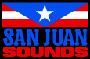

All radio and TV stations, commercials, DJ dialogue,
jingles and station imaging written by Dan Houser
and Lazlow
Produced by Lazlow
Radio Stations designed by:
Craig Conner
TV Graphics by:
Maryam Parwana
Weazel News and weather
Mike Whitely John Montone
Jenny Acorn Christine Sockol
Callista Brown Oni Faida Lampley
Jim Harrison Jeff Bottoms
Eric House Michael Jaye
Alison Maybury Joan Baker
Bryan Wilkinson Bill Andrew Quinn
Financial reporter Jessica Spencer
Weathercasters John Beach
Shannon Murphy | | TV camera work by:
Anthony Carvalho, Rob Karol, Caleb Oglesby,
Peter Adler
Internet written by:
Michael Unsworth, Lazlow, Rupert Humphries, Dan Houser
Internet built by:
Stuart Petri, Adam Tedman, Simon Lashley,
Euan Duncan, Jill Menzies, Ray Smiling, Greg Lau,
Mike Torok, Mike Carnevale, Alice Chuang | | Jingles produced by:
Lazlow, Nicholas Montgomery, Brian Scibinico,
Scott Cannizzaro
Radio and TV Singing by:
Anthony Cumia, Allison Ford, Michael Baker,
Victoria Edwards |
| | | | |
| | |
|
|
DJ François K
Imaging voice: Jen Sweeney
Signal Failure (GTA Version) Padded Cell
(R. Sen, N. Beatnik) • Published by Schnozza Music • Courtesy of DC Recordings
The Devil In Us (Dub)-Black Devil Disco Club
(B. Fevre) • Published by Hub 100 Publishing Ltd. •
Courtesy of Hub 100 t/a Lo Recordings
No Pressure (Deadmau5 Remix) One + One
(J. Zabiela, N. Fanciulli, A. Chatterley) • Published by Zabiela Trax / Copyright Control / BMG Music •
Courtesy of One + One & AnD Press Ltd
Brain Leech (Bugged Mind Remix)
Alex Gopher
(A. Gopher) • Published by Tong / Rest In Peace (RTP)
• Courtesy of Go 4 Music France
Optimo Liquid Liquid
(J. Hartley, R. McGuire, S. Principato, D. Young) •
Published by Liquid Liquid Publishing •
Courtesy of Liquid Liquid Publishing |
|
B.T.T.T.T.R.Y. (Bag Raiders Remix) K.I.M.
(K. Moyes) • Published by Copyright Control •
Courtesy of Bang Gang 12 Inches
Tits & Acid Simian Mobile Disco
(J. Ford, J. Shaw) • Published by Copyright
Control • Courtesy of Interscope Records under
license from Universal Music Enterprises and
Wichita Recordings
Let Your Body Learn Nitzer Ebb
(D. Gooday, S. Granger, V. Harris, D. McCarthy,
C. Piper) • Published by Windswept Music •
Courtesy of Geffen Records under license from
Universal Music Enterprises and Mute Records
under license from EMI Records U.K.
Testarossa (Sebastian Remix) Kavinsky
(V. Belorgey) • Published by Zomba Enterprises,
Inc. (ASCAP) / BMG Music •
Courtesy of Record Makers
Make It Happen Playgroup
(T. Jackson, K. DeConnick) • Published by
Universal-Polygram Int. Publishing o/b/o Universal
Music Publishing • Courtesy of Playgroup Recordings
|
|
I Thought Inside Out (Original Mix)
Chris Lake vs Deadmau5
(C. Lake, J. Zimmerman) • Published by Copyright
Control • Courtesy of 2007 Rising Music & AnD Press
& Down Boys Noize
(A. Ridha) • Published by Warner Chappell / Hanseatic / Ed. Vaul & Spaeth • Courtesy of Last Gang Records /
Turbo Records / Boys Noize Records
Waters Of Nazareth Justice
(G. Augé, X. de Rosnay) • Published by Blue Mountain Music • Courtesy of Ed Banger Records by arrangement with Warner Music Group
Turn To Red Killing Joke
(K. Walker, J. Coleman, M. Glover, P. Ferguson) •
Published by BMG Music Publishing •
Courtesy of Malicious Damage Records |
|
|
|
|
|
|
|
|
|
|
DJ Roy Ayers
Imaging voice: Pantera Saint-Montaigne
The Edge David McCallum
(D. Axelrod) • Published by MPL Communications • Courtesy of Capitol Records, Inc. under license from EMI Film & Television Music
Funk In The Hole Roy Ayers
(R. Ayers) • Published by Chrysalis Music (ASCAP) • Published by Chrysalis Music o/b/o itself and Roy Ayers Ubiquity, Inc. (ASCAP) • Courtesy of !K7 Records GmbH
Heavy Tune Gong
(P. Moerlen) • Published by EMI Music Publishing • Courtesy of Virgin Records Ltd. under license from EMI Film & Television Music |
|
Holy Thursday David Axelrod
(D. Axelrod) • Published by MPL Communications • Courtesy of Capitol Records, Inc. under license from EMI Film & Television Music
Knucklehead Grover Washington, Jr
(G. Washington, Jr) • Published by EMI Music Publishing • Courtesy of Motown Records under license from Universal Music Enterprises
Pokusa Aleksander Maliszewski
(A. Maliszewski) • Published by Henning Music (BMI) / Standard Music (PRS) • Courtesy of 5 Alarm Music
Raisins Ryo Kawasaki
(R. Kawasaki) • Published by Ryka Music • Courtesy of The RCA Records Label by arrangement with SONY BMG MUSIC ENTERTAINMENT
|
|
Stomp Marc Moulin
(M. Moulin) • Published by Team For Action / Danmarc • Courtesy of EMI Music Belgium under license from EMI Film & Television Music
Stratus Billy Cobham
(B. Cobham) • Published by Warner Chappell Music • Courtesy of Atlantic Records by arrangement with Warner Music Group
Sneakin' In The Back Tom Scott &
The L.A. Express
(M. Bennett / L. Carlton / J. Guerin / J. Sample / T. Scott) • Published by Almo Music Corp o/b/o/ India Music Ink • Courtesy of GRP Records under license from Universal Music Enterprises Courtesy of GRP Records under license from Universal Music Enterprises |
|
|
|
|
|
|
|
|
|
|
DJ Femi Kuti
Imaging voices: Saidah Arrika Ekulona and Alvino Johnson
Imaging Production: Jonathan Hanst
A Chance For Peace Lonnie Liston Smith
(L.L. Smith) • Published by Universal Music Publishing • Courtesy of Columbia Records by arrangement with SONY BMG MUSIC ENTERTAINMENT
Galaxy War
(J. Goldstein, H. Brown, S. Allen, D. Dickerson, H. Scott, L. Jordan, L. Oskar, C. Miller) • Published by Universal-Polygram International Publishing o/b/o Far Out Music, Inc. • Courtesy of Avenue Music Group
Give The People What They Want The O'Jays
(K. Gamble, L. Huff) • Published by Warner Chappell • Courtesy of Epic Records by arrangement with SONY BMG MUSIC ENTERTAINMENT
Home Is Where The Hatred Is Gil Scott-Heron
(G. Scott-Heron) • Published by Bienstock Publishing (ASCAP) • Courtesy of The RCA Records Label by arrangement with SONY BMG MUSIC ENTERTAINMENT |
|
Holy Thursday David Axelrod
(D. Axelrod) • Published by MPL Communications • Courtesy of Capitol Records, Inc. under license from EMI Film & Television Music
Knucklehead Grover Washington, Jr
(G. Washington, Jr) • Published by EMI Music Publishing • Courtesy of Motown Records under license from Universal Music Enterprises
Pokusa Aleksander Maliszewski
(A. Maliszewski) • Published by Henning Music (BMI) / Standard Music (PRS) • Courtesy of 5 Alarm Music
Raisins Ryo Kawasaki
(R. Kawasaki) • Published by Ryka Music • Courtesy of The RCA Records Label by arrangement with SONY BMG MUSIC ENTERTAINMENT
|
|
Stomp Marc Moulin
(M. Moulin) • Published by Team For Action / Danmarc • Courtesy of EMI Music Belgium under license from EMI Film & Television Music
Stratus Billy Cobham
(B. Cobham) • Published by Warner Chappell Music • Courtesy of Atlantic Records by arrangement with Warner Music Group
Sneakin' In The Back Tom Scott &
The L.A. Express
(M. Bennett / L. Carlton / J. Guerin / J. Sample / T. Scott) • Published by Almo Music Corp o/b/o/ India Music Ink • Courtesy of GRP Records under license from Universal Music Enterprises Courtesy of GRP Records under license from Universal Music Enterprises
Zombie Fela Kuti
(F. Kuti) • Published by EMI Music Publishing France / FKO Music • Courtesy of Barclay France under license from Universal Music Enterprises
|
|
|
|
|
|
|
|
|
|
|
DJ Roy Haynes
Imaging voice: KD Bowe
April In Paris Count Basie
(E.Y. Harburg, V. Duke) • Published by Glocca Morra Music (ASCAP) administered by Next Decade Entertainment, Inc. / Warner Chappell / BMG Songs / Kayduke Music (ASCAP) • Courtesy of Verve Records under license from Universal Music Enterprises
Giant Steps John Coltrane
(J. Coltrane) • Published by Jowcol Music (BMI) by arrangement with the Coltrane Family • Courtesy of Atlantic by arrangement with Warner Music Group
Let's Get Lost Chet Baker
(F. Loesser, J. McHugh) • Published by Sony ATV Harmony (ASCAP) • Courtesy of Blue Note Records under license from EMI Film & Television Music |
|
Moanin' Art Blakey And The Jazz Messengers
(B. Timmons) • Published by Orpheum Music / Concord Music Group • Courtesy of Blue Note Records under license from EMI Film & Television Music
Move Miles Davis
(D. Best) • Published by EMI Music Publishing • Courtesy of Blue Note Records under license from EMI Film & Television Music
Night And Day Charlie Parker
(C. Porter) • Published by Warner Chappell Music • Courtesy of Verve Records under license from Universal Music Enterprises
Snap Crackle Roy Haynes
(R. Haynes) • Published by EMI Music Publishing • Courtesy of GRP Records under license from Universal Music Enterprises
|
|
St. Thomas Sonny Rollins
(S. Rollins) • Published by Prestige Music (BMI) / Concord Music Group • Courtesy of Concord Music Group, Inc.
Take The 'A' Train Duke Ellington
(B. Strayhorn) • Published by Music Sales / Billy Strayhorn Songs, Inc. administered by Cherry Lane Music Publishing Company • Courtesy of Columbia Records by arrangement with SONY BMG MUSIC ENTERTAINMENT
Whisper Not (Big Band) Dizzy Gillespie
(B. Goldson) • Published by Time Step Music (ASCAP) • Courtesy of Verve Records under license from Universal Music Enterprises |
|
|
|
|
|
|
|
|
|
|
DJ Karl Lagerfeld
Imaging voice: Chad Coleman, Andrea Stapleton
Burning Love Breakdown Peter Brown
(C. Wade, P. Brown) • Published by EMI Music Publishing / Songs of Universal, Inc. • Courtesy of Rhino / Roulette / T.K. Records by arrangement with Warner Music Group
Can't Live Without Your Love Tamiko Jones
(R. Muller) • Published by One To One Music • Courtesy of Universal Records under license from Universal Music Enterprises
Dancer Gino Soccio
(G. Soccio) • Published by Prime Quality Music / a division of Unidisc Music • Courtesy of Warner Bros Records by arrangement of Warner Music Group
Get On Up And Do It Again Suzy Q
(Panzero, D'Orazio) • Published by Spring Break Music / a division of Unidisc Music • Courtesy of Unidisc |
|
On A Journey Electrik Funk
(Leverett, Tucci) • Published by Keep On Music / a division of Unidisc Music • Courtesy of Unidisc
Standing In The Rain Don Ray
(M. Cerrone, R. Donnez) • Published by Malligator Music • Courtesy of Malligator Productions
Supernature Cerrone
(Cerrone, R. Donnez, Lovich, Wisniak) • Published by Malligator Music • Courtesy of Malligator Productions
Till You Surrender Rainbow Brown
(P. Adams) • Published by Universal Music Corp o/b/o On Backstreet Music, Inc. and P.A.P. Music • Courtesy of Vanguard Records. A Welk Music Group Company
Underwater Harry Thumann
(H. Thumann, H. Weindorf) • Published by Universal Musica, Inc. o/b/o Televis Ed. Musicali SRL • Courtesy of Baby Records
|
|
Walk The Night Skatt Brothers
(Fernandez, Fontana) • Published by Yankee Trax (ASCAP) / Skatt Songs (ASCAP) • Courtesy of The Island Def Jam Music Group under license from Universal Music Enterprises |
|
|
|
|
|
|
|
|
|
|
DJ Jimmy Gestapo
Imaging Jingles
Voices: Armando Bordas
Guitar and vocals: Lenny Bednarz
Drums and vocals: Peter LaRussa
A Day In The Life Murphy's Law
(Murphy's Law) • Published by Murphy's Law Entertainment, Inc. • Courtesy of Astor Place Recordings, LLC
All Your Boyz Maximum Penalty
(J. Affe) • Published by Joe Affe • Courtesy of Maximum Penalty
Back To Back Underdog
(R. Birkenhead) • Published by Crunchrock (ASCAP) • Courtesy of Underdog
|
|
Injustice System Sick Of It All
(L. Koller, P. Koller, A. Majidi, C. Setari) • Published by Warner Chappell Music • Courtesy of Sick Of It All
It's The Limit Cro-Mags
(J. Joseph, H. Flanagan, P. Mitchell) • Published by Dream City Music • Courtesy of Astor Place Recordings, LLC
Just Can't Hate Enough Sheer Terror
(A. Blake, P. Bearer) • Published by FYA Music / Blackout! • Courtesy of Blackout! Records
Enforcer Leeway
(E. Sutton, A.J. Novello) • Published by Leeway / Warner Chappell Music • Courtesy of Astor Place Recordings, LLC |
|
Right Brigade Bad Brains
(E.C. Hudson, P.D. Hudson, D. Jenifer, G.W. Miller) • Published by Spirit Music o/b/o/ Bad Brains Publishing • Courtesy of Reach Out International Records (ROIR)
Tell Tale Killing Time
(A. Drago, R. McLoughlin, C. Porcaro) • Published by Carl Porcaro • Courtesy of Carl Porcaro
Victim In Pain Agnostic Front
(R. Miret) • Published by Roger Miret • Courtesy of Roger Miret |
|
|
|
|
|
|
|
|
|
|
DJ Iggy Pop
Imaging voice and production: John Reilly
1979 The Smashing Pumpkins
(B. Corgan) • Published by Chrysalis Music Publishing • Courtesy of Virgin Records America, Inc. under license from EMI Film & Television Music
Cocaine Steve Marriott's Scrubbers
(T. Hinkley, S. Marriott, G. Ridley) • Published by Royalty Network o/b/o David Platz Music (BMI) / Bulstrode Music / Steve Marriott Licensing Co, Ltd. / Bucks Music Group • Courtesy of Eagle Rock Entertainment, Ltd
Cry Godley & Creme
(K. Godley, L. Creme) • Published by EMI Music Publishing • Courtesy of Polydor Ltd. U.K. under license from Universal Music Enterprises
Dominion / Mother Russia The Sisters of Mercy
(A. Eldritch) • Published by EMI Music Publishing • Courtesy of Warner Music U.K. Ltd by arrangement with Warner Music Group
New York Groove Hello
(R. Ballard)
• Published by BMG Music Publishing
• Courtesy of Rollercoaster Records
One Vision Queen
(Queen)
• Published by EMI Music Publishing •
Courtesy of Hollywood Records / EMI U.K.
Remedy
The Black Crowes
(C. Robinson, R. Robinson)
• Published by Warner Chappell Music • Courtesy of American Recordings by arrangement with SONY BMG MUSIC ENTERTAINMENT
Turn You Inside Out R.E.M.
(W. Berry, P. Buck, M. Mills, M. Stipe) • Published by Warner-Tamerlane Pub. Corp (BMI) • Courtesy of R.E.M. / Athens, Ltd. by arrangement with Warner Music Group
|
|
Edge Of Seventeen Stevie Nicks
(S. Nicks) • Published by Welsh Witch Music by arrangement with Sony / ATV Music Publishing (BMI) • Courtesy of Modern Records, Inc. by arrangement with Warner Music Group
Evil Woman ELO
(J. Lynne) • Published by EMI Music Publishing • Courtesy of Epic Records by arrangement with SONY BMG MUSIC ENTERTAINMENT
Fascination David Bowie
(D. Jones, L. Vandross) • Published by Chrysalis Music Publishing / EMI Music Publishing / Tintoretto Music / RZO Music • Courtesy of RZO Music
Goodbye Horses Q Lazzarus
(W. Garvey) • Published by Q&B Publishing • Courtesy of MGM Music
Heaven And Hell Black Sabbath
(R.J. Dio, T. Iommi, W. Ward, T. Butler) • Published by Essex Music International, Inc. (ASCAP) / NIJI Music • Courtesy of Warner Bros Records by arrangement with Warner Music Group and Black Sabbath
Rocky Mountain Way Joe Walsh
(R. Grace, K. Passarelli, J. Vitale, J. Walsh) • Published by Universal Music Publishing • Courtesy of Geffen Records under license from Universal Music Enterprises
The Seeker The Who
(P. Townshend) • Published by Careers BMG Music Publishing (BMI) • Courtesy of Geffen Records under license from Universal Music Enterprises
Street Kids Elton John
(E. John, B. Taupin) • Published by Universal Music Publishing • Courtesy of Mercury Records Ltd. under license from Universal Music Enterprises
|
|
Her Strut Bob Seger & The Silver Bullet Band
(B. Seger) • Published by Gear Publishing • Courtesy of Capitol Records, Inc. under license from EMI Film & Television Music
I Wanna Be Your Dog Iggy Pop
(D. Alexander, R. Ashton, I. Pop) • Published by Bug Music, Inc. (BMI) • Courtesy of of The RCA Records Label by arrangement with SONY BMG MUSIC ENTERTAINMENT
Jailbreak Thin Lizzy
(P. Lynott) • Published by Pippin The Friendly Ranger Music Co, Ltd. administered by Universal Music Publishing • Courtesy of Mercury Records Ltd. under license from Universal Music Enterprises
Mama Genesis
(Genesis) • Published by EMI Music Publishing • Courtesy of Philip Collins Ltd. / Anthony Banks Ltd. / Michael Rutherford Ltd. by arrangement with Warner Music Group and EMI Records U.K.
Straight On Heart
(S. Ennis, A. Wilson, N. Wilson) • Published by Universal Music Publishing • Courtesy of Epic Records by arrangement with SONY BMG MUSIC ENTERTAINMENT
Thug ZZ Top
(B. Gibbons, D. Hill, F. Beard) • Published by Stage Three Music (ASCAP) • Courtesy of Warner Bros Records by arrangement with Warner Music Group
|
|
|
|
|
|
|
|
|
|
|
DJ Bobby Konders
Badder Den Dem Burro Banton
(D. Spalding, B. Konders) • Published by Copyright Control • Courtesy of Massive B
Set It Off Choppa Chop
(O. Johnson, B. Konders) • Published by Copyright Control • Courtesy of Massive B
Real McKoy Mavado
(D. Brookes, C. Marsh) • Published by Copyright Control • Courtesy of Daseca Productions
Raise It Up Jabba
(S. Mitchell, B. Konders) • Published by Copyright Control • Courtesy of Massive B
Brrrt Bunji Garlin
(I. Alvarez, B. Konders) • Published by Copyright Control • Courtesy of Massive B |
| Youths So Cold Richie Spice
(R. Bonner, E. Osborne, C. Dodd) • Published by Copyright Control / Jamrec Music (MCPS BMI) • Courtesy of Massive B
All About Da Weed Chuck Fenda
(L. Whitehead, E. Osborne, C. Dodd) • Published by Copyright Control / Jamrec Music (MCPS BMI) • Courtesy of Massive B
Call Pon Dem Chezidek
(D. Johnson, B. Konders) • Published by Copyright Control • Courtesy of Massive B
Last Night Mavado
(D. Books, B. Konders) • Published by Copyright Control • Courtesy of Massive B
Da Order Spragga Benz
(C. Grant, B. Konders) • Published by Copyright Control • Courtesy of Massive B
|
|
Bullet Proof Skin Bounty Killer
(R. Price, B. Konders) • Published by Copyright Control • Courtesy of Massive B
Church Heathen Shaggy
(C. Birch, O. Burrell, R. Ducant, A. Fennell, M. Gregory, T. Kelly) • Published by Livingston Music / Maurice Kelly Music / Universal Music Publishing • Courtesy of Big Yard Music Group by arrangement with The Royalty Network, Inc.
No Fraid A Munga
(D. Rhoden, D. Bennett) • Published by Tafari Music, Inc. (BMI) o/b/o Vendetta Publishing (BMI) and Greensleeves Publishing Ltd. (PRS). • Courtesy of Don Corleon Records.
Driver A Buju Banton
(B. Banton, S. Dunbar, R. Shakespeare, M. Wellington) • Published by Gargamel Music / EMI Music Publishing / Morewell Music / Tafari Music (ASCAP) • Courtesy of Gargamel Records |
|
|
|
|
|
|
|
|
|
|
DJ Juliette Lewis
Imaging voice and production: Bryan Apple
Arm In Arm (Shy Child Mix) The Boggs
(J. Friedman) • Published by We Are Boggs Music (ASCAP) • Courtesy of Say Hey Records
Cocaine Cheeseburger
(J. Bradley, C. Karacas) • Published by Rock and Roll Autopsy / Crispy Critters Music / Mr. Goodnote Music • Courtesy of Kemado Records
Disneyland, Pt 1 Get Shakes
(D. Farrow, M. Farrow) • Published by Copyright Control • Courtesy of IAMSOUND Records
Get Innocuous! LCD Soundsystem
(J. Murphy, T. Pope) • Published by Kobalt Songs • Courtesy of Capitol Records, Inc. under license from EMI Film & Television Music
Homicide The Prairie Cartel
(N. Cash) • Published by Complete Music Ltd. (BMI) • Courtesy of DFC Management
Inside The Cage (David Gilmour Girls Remix)
Juliette & The Licks
(J. Lewis, J. Womack,T. Morse, K. Walters) • Published by Rebel Rouser Music / Fintage Publishing and Collection B USA / Got To Ya Music / Kemble Thel Walters Music • Courtesy of The Militia Group
Strange Times The Black Keys
(D. Averbach, P. Carney) • Published by McMoore McLesst Publishing / Chrysalis Songs (BMI) • Courtesy of Nonesuch Records by arrangement with Warner Music Group |
| Mayday Unkle Featuring The Duke Spirit
(J. Lavelle, R. File, C. Goss, O. Betts, T. Butler, L. Ford, D. Higgins, L. Moss) • Published by Copyright Control / Baby Cole Music ASCAP / BMG Music Publishing • Courtesy of Surrender All, Ltd
No Sex For Ben The Rapture
(The Rapture) • Published by And Your Bird Can Sing (ASCAP) / Le Sound Albert (ASCAP) / Hung Up On A Dream (ASCAP) / Hurwitz/Andruzzi (ASCAP) • Produced by Timbaland • Engineered by Demo / Mixed by Jimmy Douglass • Courtesy of The Rapture
One Horse Race Tom Vek
(T.T. Vernon-Kell) • Published by Universal-PolyGram Int. Publishing, Inc. (ASCAP) • Courtesy of Island Records Ltd. under license from Universal Music Enterprises
Pony Teenager
(Littlemore, Preven, Cutler) • Published by Copyright Control • Courtesy of Godlike & Electric Records Ltd
Raging In The Plague Age Les Savy Fav
(S. Butler, H. Haynes, T. Harrington, S. Jabour) • Published by Les Savy Fav (SESAC) • Courtesy of
Frenchkiss Records
Riot In The City White Light Parade
(D. Yates) • Published by Copyright Control • Courtesy of White Light Parade
Sleep Is Impossible Deluka
(K. Kovacs, E. Innocenti) • Published by Copyright Control • Courtesy of Killsound Records
|
| Take It With A Kiss The Pistolas
(The Pistolas) • Published by Copyright Control • Courtesy of Best Before Records
The Teacher Ralph Myerz and the Jack Herren Band
(E. Sellevold, N. Olsen, J. Olsen) • Published by EMI Music Publishing • Courtesy of EMI Music Norway AS under license from EMI Film & Television Music • Contains a sample of “She’s In Love With The Teacher” as performed by The Kids used by kind permission of Sony Music Norway AS.
Vagabond Greenskeepers
(M. Share, J. Curd, N. Maurer, Jdub) • Vocals by Nick Maurer and JDub • Produced by James Curd and Mark Share • Published by Copyright Control • Courtesy of Greenskeepers
Wrap It Up Whitey
(N. Wannacot) • Published by Pure Groove Music Ltd (BMI) / Universal-Songs of Polygram Intl. • Courtesy of Pure Groove Ltd t/a Marquis Cha Cha Records / Whitey
Yadnus (Still Going to the Roadhouse mix)
!!! (Chk Chk Chk)
(Wilson, Gorman, Pugh, Vandervolgen, Andreoni, Pope, Fuchs) • Published by Warp Music • Courtesy of Warp Records |
|
|
|
|
|

|
|
|
|
|
DJ Daddy Yankee
Imaging voices: Reynaldo Infante and Julie Nunez
Imaging Production: Jonathan Hanst
Atrevete-Te-Te Calle 13
(E. Cabra, R. Perez) • Published by WB Music Corp. (ASCAP) • Courtesy of White Lion and Sony BMG US Latin by arrangement with SONY BMG MUSIC ENTERTAINMENT
Impacto Daddy Yankee
(R. Ayala, S. Storch) • Published by Cangris Publishing / TVT Music, Inc. • Courtesy of Interscope Records under license from Universal Music Enterprises
Maldades Hector El Father
(H. Delgado) • Published by Universal-Musica Unica Publishing o/b/o Itself and Rompediscoteca Music Publishing • Courtesy of Machete Music under license from Universal Music Enterprises |
| Ponmela Voltio Featuring Jowell & Randy
(G. Arias / Maldon / J. Munoz / R. Ortiz / J. Ramos / D. Torres) • Published by EMI Music Publishing • Courtesy of White Lion Records and SONY BMG US Latin by arrangement with SONY BMG MUSIC ENTERTAINMENT
Salio El Sol Don Omar
(W. Landron) • Published by EMI Music Publishing • Courtesy of Machete Music under license from Universal Music Enterprises
Sexy Movimiento Wisin & Yandel
(V. Martinez-Rodriguez, L.J.L. Morera, E. F. Padilla, M.L. Veguilla) • Published by Universal Music Publishing • Courtesy of Machete Music under license from Universal Music Enterprises
|
| Siente El Boom (Remix) Tito El Bambino Featuring Randy
(C. Miguel De Jesus, R. Acevedo, C. Arias, R. Castillo, E. Nevares, M. Maldonado, J. Munoz, D. Castro) • Published by EMI Music Publishing / Warner Chappell Music / Masacre Musical • Courtesy of EMI Televisa Music under license from EMI Film & Television Music
Ven Bailalo Angel Y Khriz
(A. Rivera, C. Colon, J. Torres) • Published by Ven Bailalo Music Publishing / Hustleville Music Publishing / Gocho Music Publishing • Courtesy of MVP Records, Inc. |
|
|
|
|
|
|
|
|
|
|
DJ DJ Mister Cee
The Evil Genius DJ Green Lantern
Imaging voices: Eric Edwards,
Vanessa Grullon
Imaging Production: Bryan Apple
Announcer for Green Lantern show:
Larry Kenney
What’s The Problem Styles P
(J. D’Agostino, D. Styles) • Published by DJ Green Lantern, Inc. (BMI) / EMI Blackwood Music, Inc. (BMI) & Paniro’s • Publishing / Justin Combs Publishing / EMI April Music (ASCAP) • Produced by Green Lantern for Future Green Entertainment, Inc. / HRH Management, Inc.
Anybody Can Get It Uncle Murda
(J. D’Agostino, L. Grant) • Published by J Green Lantern, Inc. (BMI) / EMI Blackwood Music, Inc. (BMI) & Leonard Grant (BMI) • Produced by Green Lantern for Future Green Entertainment, Inc. / HRH Management, Inc.
Nickname Qadir
(J. D’Agostino, Q. Habeeb) • Published by DJ Green Lantern, Inc. (BMI) / EMI Blackwood Music, Inc. (BMI) & HRH Music Publishing (BMI) • Produced by Green Lantern for Future Green Entertainment, Inc. / HRH Management, Inc.
Where’s My Money Busta Rhymes
(J. D’Agostino, T. Smith) • Published by DJ Green Lantern, Inc. (BMI) / EMI Blackwood Music, Inc. (BMI) / Copyright Control • Produced by Green Lantern for Future Green Entertainment, Inc. / HRH Management, Inc.
Stick‘m Red Café
(J. D’Agostino, J. Denny) • Published by DJ Green Lantern, Inc. (BMI) / EMI Blackwood Music, Inc. (BMI) & Pen Game Music (ASCAP) • Produced by Green Lantern for Future Green Entertainment, Inc. / HRH Management, Inc.
Wet ‘Em Up Tru Life
(J. D’Agostino, R. Rosado) • Published by DJ Green Lantern, Inc. (BMI) / EMI Blackwood Music, Inc. (BMI) & Robert Rosado • Publishing Designee • Produced by Green Lantern for Future Green Entertainment, Inc. / HRH Management, Inc.
Dirty New Yorker Mobb Deep Featuring Havoc & PRODIGY FROM H.N.I.C. Part 2 Sessions
(A. Johnson, A. Maman, K. Muchita) • Produced by The Alchemist • Published by P Noid Publishing / Universal Music Careers (BMI) / A. Maman Music / The Royalty Network (ASCAP) / Juvenile Hell / BMG Songs, Inc. (ASCAP) • Courtesy of Quiet Money Entertainment, Inc. |
|
Price On Your Head Johnny Polygon
(J. D’Agostino, J. Armour) • Published by DJ Green Lantern, Inc. (BMI) / EMI Blackwood Music, Inc. (BMI) & HRH Music Publishing (BMI) • Produced by Green Lantern for Future Green Entertainment, Inc. / HRH Management, Inc.
Top Down Swizz Beatz
(K. Dean, E. McCaine, R. Hatcher, L. Major) • Published by Songs of Universal / Deep Sounds Music / EMI Music Publishing / Longitude Music • Courtesy of Universal Records under license from Universal Music Enterprises
War Is Necessary Nas
(N. Jones, L. Lewis, W. Coleman)
Produced by L.E.S & WYLDFYER. For Big Things Entertainment / Big Boss Entertainment / Relentless Management • Published by Universal Music Publishing / Maukeens music (ASCAP) / Nottinghill Music / Emotion Music (BMI) • Courtesy of The Island Def Jam Music Group under license from Universal Music Enterprises
Flashing Lights Kanye West Featuring Dwele
(K. West, E. Hudson) • Published by EMI Music Publishing / Warner Chappell Music • Courtesy of The Island Def Jam Music Group under license from Universal Music Enterprises
Crackhouse Fat Joe Featuring Lil Wayne
(J. Cartagena, D. Carter, S. Morales, J. Bobe and K. Pittman, B. Bouldin, E. Dixon, E. Edwards, L. Freeze, L. Muggerud and B. Williams)
Additional vocals by Dre • Lil Wayne appears courtesy of Cash Money / Universal Records • Dre appears courtesy of Jive Records • Published by Joseph Cartagena Music (BMI) / Young Money Publishing, Inc. / Warner-Chappell Music (BMI) / J'Bo Music / Maddie Jaimes Music Publishing (BMI) / Mizzleboy Music / Maddie Jaimes Music Publishing (BMI) • "The Crackhouse" contains elements of the composition "Hand On The Pump" (Brett Bouldin, Eugene Dixon, Earl Edwards, Louis Freeze, Larry Muggerud, Bernice Williams) published by Conrad Music, a division of Arc Music Corp. (BMI) and Universal Music Corp. (ASCAP) o/b/o itself and Soul Assassins Music / Universal Music Corp. (ASCAP) o/b/o itself and Half Bouldin / Half Ince Music, Inc. and Universal Music MGB Songs (ASCAP) o/b/o itself and Cypress Hill Music. "Hand On The Pump" contains elements of “Duke of Earl” (Eugene Dixon, Earl Edwards, Bernice Williams) published by Conrad Music, a division of Arc Music Corp. (BMI). Used by permission. All rights reserved.
Courtesy of Terror Squad Entertainment / Virgin Records America, Inc. under license from EMI Film & Television Music
|
| We Celebrate Ghostface Killah Featuring Kid Capri
(D. Fekaris, N. Zesses, D. Coles, K. Capri) • Published by Rich Kid Music / Jobete Music Co / EMI Music PublishingI / For My Son / Royalty Network (ASCAP) / Steady On The Grind / Royalty Network (BMI) / Kid Capri Publishing • Courtesy of Motown Records under license from Universal Music Enterprises • Contains a sample of "I Just Want to Celebrate " as performed by Rare Earth used by kind permission of Universal Records under license from Universal Music Enterprises.
Blow Your Mind (Remix) Styles P Featuring Sheek Louch & Jadakiss
(Brookes, Kaseem, Styles) • Published by Warner Chappell Music Publishing / EMI Music Publishing /Universal Music Publishing •
Jadakiss appears courtesy of Universal Records under license from
Universal Music Enterprises • Contains a sample of “My Ship Is Coming In” as performed by Walter Jackson by arrangement with SONY BMG MUSIC ENTERTAINMENT • Courtesy of Koch Records
Stylin’ Papoose
(R. Smith, W. Mackie) • Published by Universal Music Publishing / Thugacation Music • Courtesy of Jive Records by arrangement with SONY BMG MUSIC ENTERTAINMENT
Hip Hop (Remix) Joell Ortiz Featuring Jadakiss & Saigon
(J. Ortiz, J. Philips, B. Carenard) • Published by EMI Music Publishing / Joell Ortiz Music / Sony ATV Music • Saigon appears courtesy of Atlantic Records by arrangement with Warner Special Markets • Jadakiss appears courtesy of Universal Records under license from Universal Music Enterprises • Courtesy of Joell Ortiz
Getaway Driver Maino
(J. D’Agostino, J. Coleman) • Published by DJ Green Lantern, Inc. (BMI) / EMI Blackwood Music, Inc. (BMI) / Copyright Control • Produced by Green Lantern for Future Green Entertainment, Inc. / HRH Management, Inc. |
|
|
|
|
|
|
|
|
|
|
Mixed by DJ Premier live from HeadQcourterz
Supa Star Group Home
(J. Heath, J. Fleder, C. Martin) • Published by Low Budget Environment, Inc. / EMI Music Publishing •Courtesy of The Island Def Jam Music Group under license from Universal Music Enterprises
All For One Brand Nubian
(L. DeChalus, M. Dixon, D. Murphy) • Published by Rushtown Music, Inc. / Universal Music Corp (ASCAP) • Courtesy of Elektra Entertainment by arrangement with Warner Music Group
I Got It Made Special Ed
(Archer, Thompson, Hill, Beavers, Joyner, Taylor) • Published by Bridgeport Music / Warner Chappell Music • Courtesy of Profile Records, Inc. by arrangement with SONY BMG MUSIC ENTERTAINMENT
D. Original Jeru the Damaja
(K. Davis, C. Martin) • Published by Irving Music o/b/o Itself and Perverted Alchemist Music / EMI Music Publishing • Courtesy of The Island Def Jam Music Group under license from Universal Music Enterprises
Droppin’ Science Marley Marl Featuring Craig G
(C. Curry, M. Williams) • Published by CAK Music, Inc. • Courtesy of Cold Chillin’ by arrangement with Warner Music Group |
| Droppin’ Science Marley Marl Featuring Craig G
(C. Curry, M. Williams) • Published by CAK Music, Inc. • Courtesy of Cold Chillin’ by arrangement with Warner Music Group
Cha Cha Cha MC Lyte
(F. Byrd) • Published by Universal Music Corp / Top Billin’ Music, Inc. / King Of The Hill Publishing / Bug Music (ASCAP) • Courtesy of Atlantic Recording Corp by arrangement with Warner Music Group
Top Billin’ Audio 2
(K. Robinson) • Published by First Priority Music / Songs Of Universal, Inc. / Hot Butter Milk Music / RYKO • Courtesy of Atlantic Recording Corp by arrangement with Warner Music Group
Go Stetsa Stetsasonic
(Bolton, Hamilton, Huston, Nemley, Roman, Wright) • Published by Warner Chappell Music • Courtesy of Tommy Boy Music by arrangement with Warner Music Group
|
| It’s Yours T. La Rock & Jazzy Jay
(R. Rubin) • Published by Sony ATV Tunes • Courtesy of Warlock Records
Who’s Gonna Take the Weight Gang Starr
(K. Elam, C. Martin) • Published by Gifted Pearl Music, Inc. / Almo Music Corp (ASCAP) • Courtesy of Virgin Records America, Inc. under license from EMI Film & Television Music
Live At The Barbeque Main Source
(K. MacKenzie, S. MacKenzie, W. Mitchell) • Published by SLG Music / EMI Music Publishing • Courtesy of Next Decade Entertainment, Inc. o/b/o Wild Pitch Records |
|
|
|
|
|
|
|
|
|
|
DJ A computer
Imaging voice: Alexandra Williamson
5:23 (Maiden Voyage) Global Communication
(T. Middleton, M. Pritchard) • Published by EMI Music Publishing / Copyright Control • Courtesy of Dedicated Records and SONY BMG MUSIC ENTERTAINMENT U.K. Ltd. by arrangement with SONY BMG MUSIC ENTERTAINMENT
A Rainbow in Curved Air Terry Riley
(T. Riley) • Published by Ancient Word Music • Courtesy of Sony BMG Masterworks and SONY BMG MUSIC ENTERTAINMENT Germany GmbH by arrangement with SONY BMG MUSIC ENTERTAINMENT
Arrival Steve Roach
(S. Roach) • Published by Fortuna One Music (BMI) • Courtesy of Celestial Harmonies o/b/o Fortuna Records
|
| Pruit Igoe Philip Glass
(P. Glass) • Published by Dunvagen Publishing • Courtesy of Nonesuch Records by arrangement with Warner Music Group
Remote Viewing Tangerine Dream
(C. Franke, E. Froese, J. Schmoelling) • Published by EMI Music Publishing • Courtesy of Elektra Records by arrangement with Warner Music Group
Selected Ambient Works Vol. II CD2 TRK5
Aphex Twin
(R. James) • Published by Chrysalis Songs (BMI) • Courtesy of Sire Records Company by arrangement with Warner Music Group
Communiqué ‘Approach Spiral’
Michael Shrieve
(M. Shrieve, K. Shrieve) • Published by Maitreya Music (BMI) • Courtesy of Fortuna Records
|
| The Oh of Pleasure Ray Lynch
(R. Lynch, T. Canning) • Published by Ray Lynch Productions (BMI) • Courtesy of Ray Lynch Productions
Oxygene, Pt. 4 Jean Michel Jarre
(J.M. Jarre) • Published by Francis Dreyfus Music (USA) Inc. administered by Soroka Music Ltd. • Courtesy of Disques Dreyfus |
|
|
|
|
|
|
|
|
|
|
DJ Vaughn Harper
Image voice: Keith Randolph Smith
Imaging Production: Bryan Apple
Callers: Damon the Pimp, Rick Dyers, John F. Rocket, Mark Anthony, Yahmahn Clark, Mort Goldman
Because of You Ne-Yo
(M. S. Eriksen, T.E. Hermansen, S. Smith) • Published by EMI April Music, Inc. / Sony / ATV Tunes, LLC. (ASCAP) • Courtesy of The Island Def Jam Music Group under license from Universal Music Enterprises
Bump N’ Grind R. Kelly
(R. Kelly) • Published by Universal Music-Z Tunes LLC o/b/o/ Itself and R. Kelly Publishing, Inc. (BMI) • Courtesy of Jive Records by arrangement with SONY BMG MUSIC ENTERTAINMENT
C.O.D. (I’ll Deliver) Mtume
(Mtume, T. Agee) • Published by Mtume Music (BMI) and Do Drop In Music Publishing (BMI) • Courtesy of Epic Records by arrangement with SONY BMG MUSIC ENTERTAINMENT
Criticize Alexander O’Neal
(G.G. Johnson, A. O’Neal) • Published by EMI Music Publishing / Universal Music Publishing • Courtesy of Avant Garde Enterprises, Inc.
Daylight Ramp
(W.H. Allen, R. Ayers, E. Birdsong) • Published by Michelle-Bird Music / Brainfood Music / Bug Music / Chrysalis Music Publishing • Courtesy of Geffen Records under license from Universal Music Enterprises
Footsteps in the Dark Isley Brothers
(R. Isley, R. Isley, C. Jasper) • Published by EMI Music Publishing • Courtesy of T-Neck / Epic Records by arrangement with SONY BMG MUSIC ENTERTAINMENT |
| Freek’n You Jodeci
(D. Swing) • Published by EMI Music Publishing • Courtesy of Geffen Records under license from Universal Music Enterprises
Get It Shawty Lloyd
(J. Lackey, R. Lovett, L. Polite, Z. Wallace) • Published by EMI Music Publishing • Courtesy of The Inc. under license from Universal Music Enterprises
Golden Jill Scott
(A.C. Bell, H.L. Robinson, J. Robinson, J.H. Scott) • Published by JDR Superstar Music • Courtesy of Hidden Beach
Hangin’ On A String Loose Ends
(J. Eugene, C. Mcintosh, S. Nichol) • Published by Sony ATV Music U.K. / EMI Virgin Music, Inc. (ASCAP) • Courtesy of Virgin Records Ltd. under license from EMI Film & Television Music
Have You Ever Loved Somebody
Freddie Jackson
(B.J. Eastmond, J.W. Skinner) • Published by Joskin Music, Inc. (BMI) / Zomba Songs / Barry Eastmond Music Company / Zomba Entertainment (ASCAP) • Courtesy of Capitol Records, Inc. under license from EMI Film & Television Music
In My Bed (So So Def Remix) Dru Hill
(R. Brown, D. Simmons, R. Stacy) • Published by Warner-Tamerlane Publishing Corp. (BMI) / Bug Music (BMI) / Universal Music Z Songs (BMI) • Jermaine Dupri and Da Brat appear courtesy of So So Def Recordings / Columbia Records by arrangement with SONY BMG MUSIC ENTERTAINMENT • Courtesy of The Island Def Jam Music Group under license from Universal Music Enterprises
Inner City Blues (Make Me Wanna Holler)
Marvin Gaye
(M. Gaye, J. Nyx) • Published by EMI Music Publishing • Courtesy of Motown Records under license from Universal Music Enterprises
|
| Inside My Love Minnie Riperton
(M. Riperton, R.J. Rudolph, L. Ware) • Published by Embassy Music Corp • Courtesy of Capitol Records, Inc. under license from EMI Film & Television Music
It’s Only Love Doing Its Thing Barry White
(J.L. Cameron, V.M. Cameron) • Published by Warner Chappell Music • Courtesy of The Island Def Jam Music Group under license from Universal Music Enterprises
I Want You C.J.
(B. Sigler, R. Tyson, C. Higgins, J. Barias, P. Jackson) • Published by Warner Chappell Music / Universal Music Corp o/b/o/ Nivrac Tyke Music / Uni Music o/b/o/ Tetragrammaton Music / EMI Music Publishing • Courtesy of Capitol Records, Inc. under license from EMI Film & Television Music • Contains a sample of “What Am I Waiting For” as performed by The O’Jays used by kind permission of Epic Records by arrangement with SONY BMG MUSIC ENTERTAINMENT
Just Be Good To Me S.O.S. Band
(Harris, Lewis) • Published by EMI Music Publishing• Courtesy of Avant Garde Enterprises, Inc.
Pony Ginuwine
(S. Garrett, T. Mosley, Lumpkin) • Published by Warner Chappell / EMI Music Publishing / Windswept Music • Courtesy of Epic Records by arrangement with SONY BMG MUSIC ENTERTAINMENT
You Raheem DeVaughn
(R. DeVaughn, T. Hunter) • Published by Royalty Network o/b/o 83 St. Music / Zomba Entertainment / Ahmad’s World • Courtesy of Jive Records by arrangement with SONY BMG MUSIC ENTERTAINMENT |
|
|
|
|
|
|
|
|
|
|
DJ Carl Bradshaw
Imaging voices: Sebastian Alvarado, Erik Stenqvist, Chris Connor, Oliver Kann, Alex Lins
Chase Dem Stephen Marley
(S. Marley) • Published by EMI Music Publishing • Courtesy of Motown Records under license from Universal Music Enterprises
Concrete Jungle (The Unreleased Original Jamaican Version) Bob Marley & The Wailers
(B. Marley) • Published by Spirit Music o/b/o/ Blue Mountain Music • Courtesy of Island Records Ltd. under license from Universal Music Enterprises
Pimper’s Paradise Bob Marley & The Wailers
(B. Marley) • Published by Spirit Music o/b/o/ Blue Mountain Music • Courtesy of Island Records Ltd. under license from Universal Music Enterprises |
| Rat Race Bob Marley & The Wailers
(R. Marley) • Published by Spirit Music o/b/o/ Blue Mountain Music • Courtesy of Island Records Ltd. under license from Universal Music Enterprises
Rebel Music (3 O’Clock Roadblock)
Bob Marley & The Wailers
(A. Barrett, S. Peart) • Published by Spirit Music o/b/o/ Blue Mountain Music • Courtesy of Island Records Ltd. under license from Universal Music Enterprises
Satisfy My Soul Bob Marley & The Wailers
(B. Marley) • Published by Spirit Music o/b/o/ Blue Mountain Music • Courtesy of Island Records Ltd. under license from Universal Music Enterprises
|
| So Much Trouble In The World Bob Marley & The Wailers
(B. Marley) • Published by Spirit Music o/b/o/ Blue Mountain Music • Courtesy of Island Records Ltd. under license from Universal Music Enterprises Courtesy of Island Records Ltd. under license from Universal Music Enterprises
Stand Up Jamrock Bob Marley & The Wailers and Damien Marley
(I. Kamoze, B. Marley, D. Marley, S. Marley, P. Tosh) • Published by Spirit Music o/b/o/ Blue Mountain Music / Universal MusicPublishing / EMI Music Publishing • Courtesy of Island Records Ltd. under license from Universal Music Enterprises
Wake Up & Live (Parts 1 & 2) Bob Marley & The Wailers
(S. Davis, B. Marley) • Published by Spirit Music o/b/o/ Blue Mountain Music • Courtesy of Island Records Ltd. under license from Universal Music Enterprises |
|
|
|
|
|
|
|
|
|
|
DJ Ruslana
Imaging voices: Larissa Tokmakov, Krystyna Jakubiak, Mark Nierman
Imaging Production: Mark Nierman
Gruppa krovi Gruppa Kino
(V. Tsoi) • Published by Moroz Records • Courtesy of Moroz Records
Jdat Marakesh
(M. Gritsenko) • Published by Thrust Records • Courtesy of Thrust Records
Kvartira Zvery
(Roma Zver) • Published by OOO Zvery • Courtesy of OOO Zvery
King Ring Seryoga
(S. Parhomenko) • Published by Megaliner records • Courtesy of Megaliner Records |
| Liberty City: The Invasion Seryoga
(S. Parhomenko) • Published by Kingring 2008 • Courtesy of Kingring 2008
Liniya zhizni Splin
(A.Vasiliev) • Published by Figaro Music • Courtesy of Figaro Music
Mama Basta
(Basta) • Published by Gazgolder Records • Courtesy of Gazgolder Records
Nikogo ne zhalko Leningrad
(S.V. Shnurov) • Published by ShnurOK • Courtesy of ShnurOK
Zelenoglazoe Taksi (Club Remix) Oleg Kvasha
(O.Kvasha, V. Panfilov) • Published by O.Kvasha, V. Panfilov • Courtesy of Megaliner Records
|
| O tebe Ranetki
(S. Milnichenko, S. Milnichenko, V. Kozlova) • Published by Megaliner Records • Courtesy of Megaliner Records
RAP Dolphin
(Lisikov A.V. / Dolphin) • Published by Zita&Gita • Courtesy of Zita&Gita
Schweine Glukoza
(M. Fadeev, M. Fadeev, Glukoza ) • Published by Max Fadeev 2008 • Courtesy of LLC “PK Monolit” 2008
Wild Dances Ruslana
(Ruslana, O. Ksenofontov) • Published by COMP Music • Courtesy of COMP Music
|
|
|
|
|
|
|
|
|
|
|
Imaging voices: Brian Thomas, Jack Harte
Just or Unjust
Announcer - Jim Fagan
Judge - ML Wooley
Lori - Chelsea Peretti
Chuck - Jim Norton
Mr. Davis - Charles Everett
Ms Allan - Pascale Armand |
|
Richard Bastion Show
Richard Bastion - Jason Sudeikis
Callers:
Richard Fury
Jimmy Bob Dautreeve
Bob Jones
Hadley Tomicki
Kim Hawker
Ian Brown
Jeff Sternberg
Art Cuebik
Mike Maples
Chris Menaz
Mike Moe
Matt Pearson
Jenifa Jones
Hilda Wright
Ben Wissett
|
|
Fizz!
Jayne Labrador - Melinda Wade
Marcel LeMeau - Fez Whatley
Jeffron James - Patrice Oneal
Larissa Slalom - Amy Sacco
Lamon - Disco
Christopher Tibbits - Marlon Geshlider
|
|
|
|
|
|
|
|
|
|
|
Imaging voice: Sonny Fox
The Séance
Beatrix Fontaine - Ilyana Kadushin
Callers:
Shelley Miller
Yahael Torres
Jena Axelrod
Chris Murray
Tricia Shaw |
|
Pacemaker
Ryan McFallon - Bryan Tucker
Shelia Stafford - Rachel Allen
Wilson Taylor Sr. - Bill Hader
Mason Waylon - Rick Shapiro
|
|
Intelligent Agenda
Mike Riley - Brian Sack
Brandon Roberts - Chris Gannon
John Hunter - Henry Strozier
Zachary Tyler - Matt Gumley
Announcer - Sean Lynch
Callers:
Tanner Kenney
Erik Nagel
Jessica Spencer
Rene Campanelli
Derek Blair
Sean Macaluso
Adam Wolkoff
|
|
|
|
|
|
|
|
|
|
|
Production voice and Imaging: Jeff Berlin
Production Music: Robert Dudzic and Groove Addicts
Pervert, Hotdog vendor, and Internet nerd:
Fred Armisen
People on street:
Kingsley Chima Aigbe
Jeff Yorkes
Pam Alexander
Donato Greco
Mimi Lee
Adrian DeTray
Shawn Allen
Russell Forman
Tais Vasconcellos
Gabriella Rosa
Steven Huie |
|
|
| |
|
|
Come Into My Life Rick James
(R. James) • Published by EMI Music Publishing • Courtesy of Motown Records under license from Universal Music Enterprises
Hustlin’ Rick Ross
(A. Harr, J. Jackson, W. Roberts) • Published by Nottingdale Songs, Inc. (ASCAP) / Sony ATV Songs / Warner Chappell Music • Courtesy of The Island Def Jam Music Group under license from Universal Music Enterprises
|
|
Ooh La La Goldfrapp
(Goldfrapp, Gregory) • Published by Warner Chappell Music • Courtesy of Mute Records under license from EMI Film & Television Music
Shake Ya Ass Mystikal
(Hugo, Tyler, Williams) • Published by EMI Music Publishing / Zomba Enterprises, Inc. (ASCAP) o/b/o Itself and The Braids Publishing • Courtesy of Jive Records by arrangement with SONY BMG MUSIC ENTERTAINMENT
|
|
A Real Real Naill Toner
(N. Toner) • Published by Crucial Music • Courtesy of Crucial Music Corporation
Celtic High Step Killian’s Angels
(B. Mullaney) • Published by Crucial Music • Courtesy of Crucial Music Corporation
|
Soviet Connection – The Theme from
Grand Theft Auto IV
Written and Produced by Michael Hunter for
OLBAP Limited.
Score written and produced by Michael Hunter for OLBAP Limited |